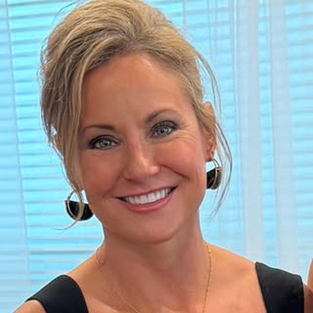
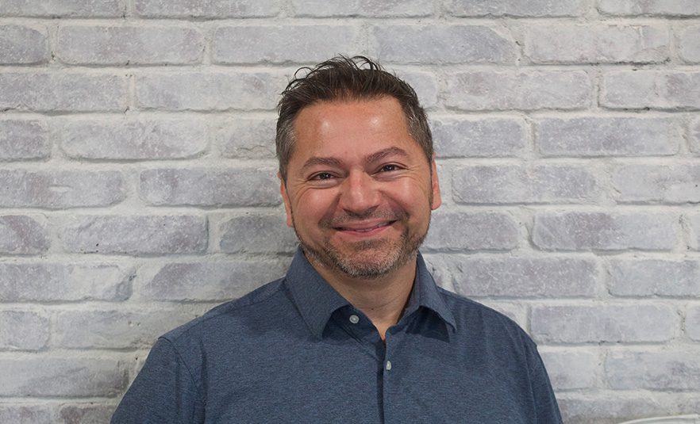
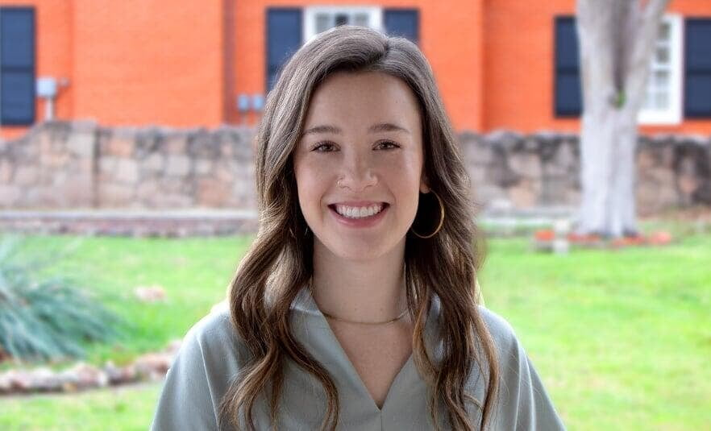

Founded on a simple belief: every person deserves comfort, dignity, and compassion at the end of life. We have carried that promise across West Texas since 2019.
At Bridge Hospice, we believe that end-of-life care should honor the whole person - physically, emotionally, and spiritually. Our interdisciplinary team works alongside families to create a care plan that reflects each patient's values, wishes, and unique story.
From pain management and symptom control to chaplain visits and bereavement support, every service we provide is designed to bring peace to patients and strength to their families. We do not just manage symptoms. We walk alongside you through one of life's most sacred passages.

Tammie Ware founded Bridge Hospice in 2019 with a deeply personal mission: to provide end-of-life care that feels like family. After years of working in healthcare, she saw too many families navigating hospice alone, without the warmth and guidance they needed at the hardest moment of their lives.
She built Bridge Hospice to be different. Every hire, every protocol, every home visit reflects her belief that compassion is not a checkbox - it is the foundation of everything we do. Under her leadership, Bridge Hospice has grown from a small Lubbock practice to a 25-person team serving families across West Texas.
The people behind our promise. Every member of our leadership team is driven by a shared commitment to compassionate, physician-led care.


Held to the highest standards by the organizations that matter most in hospice care.
Every interaction is guided by empathy. We meet patients and families wherever they are, with warmth and understanding that goes beyond clinical care.
We honor every patient's autonomy, privacy, and personal values. End-of-life care should preserve what makes each person unique, not diminish it.
Bridge Hospice was built for Lubbock and the families who call West Texas home. We invest in the community that trusts us with their most vulnerable moments.
CHAP accreditation and five consecutive Best of the West awards reflect our standard: the highest level of clinical care paired with genuine human connection.
Whether you want to volunteer your time, build a career in compassionate care, or refer a patient who needs support, we would be honored to hear from you.